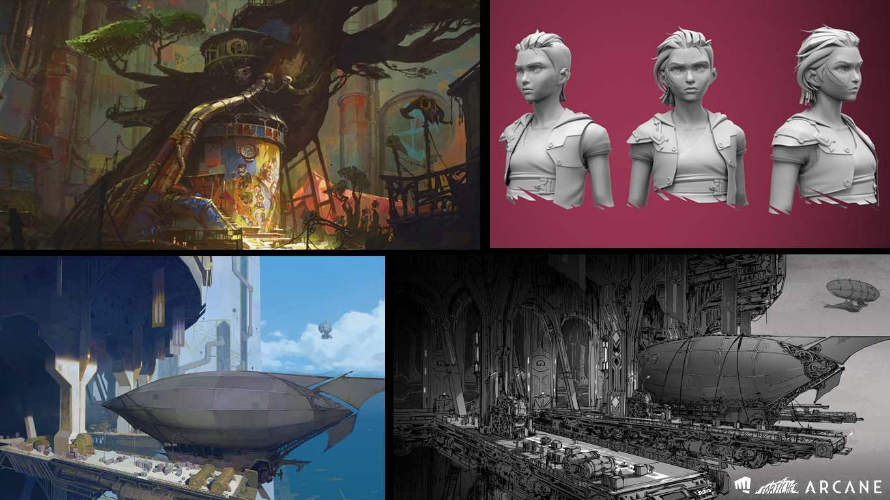
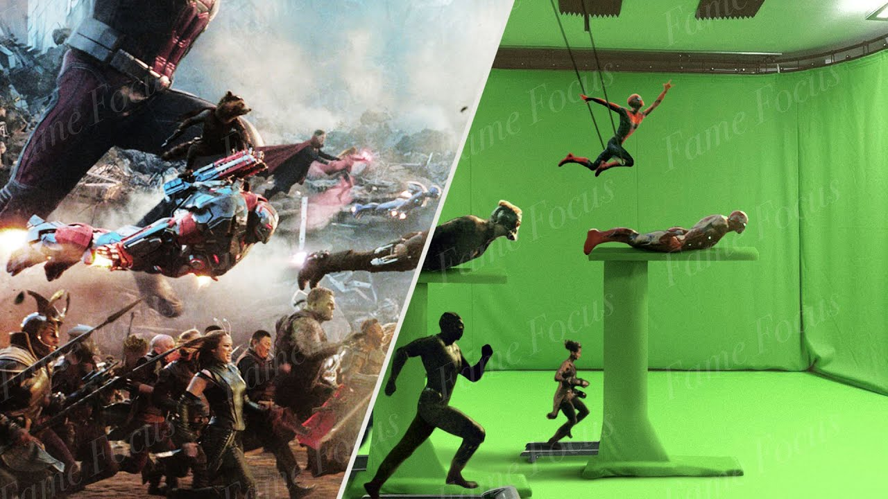
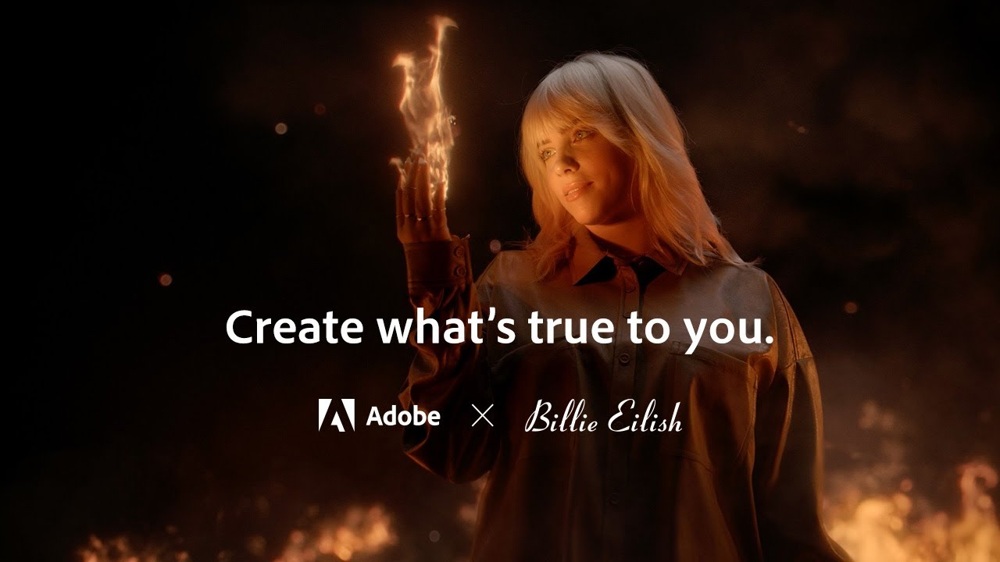

Meus projetos

Arcane: Blender.
Este é um projeto cinematográfico. Teve sua primeira etapa 3D feito no Blender, com personagens e cenários modelados diretamente na plataforma.

Green Screen no After Effects.
Projeto repassado à plataforma para edição visual. É adicionado efeitos de animação, de gráficos, de vídeo e movimento após o take original.

Adobe Combo.
Este projeto consciste na propaganda da Adobe Combo, incluindo e apresentando todos os seus recursos.